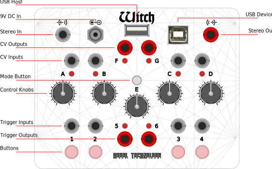
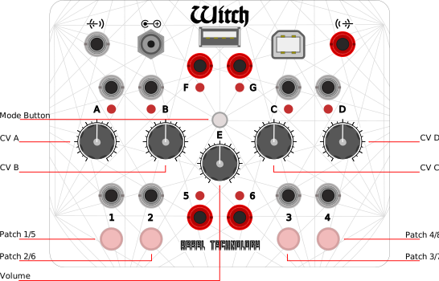
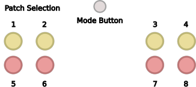

Specifications
- Analog to Digital Conversion: 48k Hz, 24 bits
- Digital to Analog Conversion: 48k Hz, 24 bits
- USB Audio output: 48k Hz, 16 bits
- Audio Processing: 48k Hz, 32 bits
- ARM Cortex M4 microcontroller at 168Mhz
- 8 Megabyte non-volatile patch and sample storage
- 8 Megabyte audio RAM buffers
- CV and trigger inputs: 0 to 5V, Eurorack compatible
- CV and trigger outputs: 0 to 5V, Eurorack compatible
- Stereo input: Line level, 100k Ohm Impedance
- Stereo output: Headphone / line level, 22 Ohm Impedance
Expression vs Performance
The Expression version of each patch provides continuous pitch control on parameter A, and supports MPE controllers (MIDI Polyphonic Expression).
The Performance version has discrete pitch control on parameter A, supports regular MIDI controllers, and allows for sustained polyphonic voicings without the use of a controller.
Takeover Controls
If the parameter value does not correspond with the current knob position then the LED above the knob will be fully lit. This can happen if the knob has been moved with the Mode button down, or if the parameter value has been changed over MIDI.
In essence, each knob serves a dual purpose, and the Mode button determines which one is active. To prevent snap-back when the button is released, or inadvertently changing a setting, we only update the value when it aligns with the knob position. This is what is known as takeover logic. When a parameter is in takeover, that is to say, its present value is different from the one indicated by the knob, we indicate this with the LED above it (or the two LEDs above it, in the case of knob E).
To take back control, turn the knob until it matches the parameter value. The LED will then return to normal function.
The patch parameters can be controlled by MIDI. Changing a parameter value by MIDI will also put the knob in takeover mode. The MIDI Control Change messages to set the parameter values are:
CC75 Control Parameter A CC76 Control Parameter B CC77 Control Parameter C CC78 Control Parameter D CC79 Control Parameter E
Mode Functions
With the Mode Button pressed down the knobs and buttons have alternate functions:
The buttons change patches, knob E changes the output volume, and knobs A to D changes the associated CV attenuation.
Changing Patches
To change patches on the device, simply press and hold the Mode button. The currently active patch slot will be indicated on the buttons, in yellow for patches 1 to 4, and red for patches 5 to 8. Press a button to select the new patch. To toggle between red and yellow (high and low patch slot numbers), press again. Release the Mode button to start the new patch.

Note: be careful to disconnect or deactivate any external triggers before pressing the Mode button, or you may inadvertently change patches!
You can also change the active patch by sending the device a MIDI Program Change (aka PC) message, or pressing one of the buttons below:
Changing Output Volume
To change the output volume, first press and hold the Mode button. Then turn knob E until the two middle LEDs are no longer lit. While still holding down the Mode button, turn knob E to the required volume setting then release the Mode button. The two middle LEDs will light up again, to indicate that parameter E is in takeover mode. Turn the E knob again until the LEDs resume their normal function of indicating the CV output levels.
You can also set the output volume with MIDI CC7, the Volume controller.
Changing CV Attenuation
Pressing the Mode button also allows you to adjust the CV attenuation for each of the CV inputs A to D. Press and hold the Mode button, then turn the knob corresponding to the CV that you want to adjust. When the knob reaches the current attenuation value (default is around the 2 o'clock position) then the LED light will go out. You can now turn the knob up or down to the attenuation level you want. Centre position means 0 gain (full attenuation). Turn it clockwise for up to 2x gain, or anti-clockwise for up to -2x inverted gain.
When you release the mode button, the LED corresponding to the adjusted parameter (or parameters) will again light up, until the knob is moved back to the previous position.
The CV attenuation for each parameter can also be set by MIDI. Values from 63 to 127 sets a positive amount of gain, up to 2x. Below 63 to 0 sets an inverted gain, down to -2x. A value of 97 sets 1V/Octave, 5V CV range. The MIDI controls are:
CC83 CV Attenuverter A CC84 CV Attenuverter B CC85 CV Attenuverter C CC86 CV Attenuverter D
Progress Indication
When the device is busy, for example loading a patch or resource, the top row of LEDs will indicate progress by lighting up from left to right.
Error Indication
In case of an error, the Witch flashes the top row lights, alternating between the middle two and the flanking lights.
Usually the cause of the error can be found in a message at the top of e.g. this page, or the Dashboard page. To exit error mode, select or load a new patch, or simply press the Mode button to suppress the blinking.
Bootloader Indication
A third type of indication is given by the bootloader, which alternates the middle F and G lights when it is activated, and when it is loading or storing a firmware image.
Entering bootloader mode happens if the Mode button is held down on startup, or if an unrecoverable error has occurred. To exit the bootloader, reset the device.
MIDI Implementation Chart
Control Change Messages Received:
PATCH_PARAMETER_A: CC20
PATCH_PARAMETER_B: CC21
PATCH_PARAMETER_C: CC22
PATCH_PARAMETER_D: CC23
PATCH_PARAMETER_E: CC24
FX_AMOUNT: CC24
WAVESHAPE: CC13
STEREO_MIX: CC13
ATTACK: CC75
DECAY: CC76
SUSTAIN: CC77
RELEASE: CC78
ATTACK_CURVE: CC79
RELEASE_CURVE: CC80
EXTL_AMOUNT: CC81
EXTR_AMOUNT: CC82
ATTENUATE_A: CC83
ATTENUATE_B: CC84
ATTENUATE_C: CC85
ATTENUATE_D: CC86
LFO1_SHAPE: CC87
LFO2_SHAPE: CC88
FX_SELECT: CC89
VOLUME: CC7
MODULATION: CC1
MIDI Polyphonic Expression Messages Received:
PITCH_BEND/X PB
BRIGHTNESS/Y CC74
PRESSURE/Z AT/CP
Registered Parameters Received:
Pitch Bend Range: RPN0
MPE Configuration: RPN6
RPN Reset: RPN3fff
MIDI Polyphonic Expression
The Expression version of the patches support MPE controllers (MIDI Polyphonic Expression). When the patch is selected, the MCM (MPE Configuration Message) is sent. The MCM configures the master channel, and the number of available voices. The Witch will also respond correctly to a received MCM to configure high or low master channel (Upper or Lower Zone), though the number of available voices is fixed. Pitch range defaults to 2 semitones for Zone Level, and 48 semitones for Note Level. Both ranges can be reconfigured with Pitch Bend Sensitivity RPN messages.